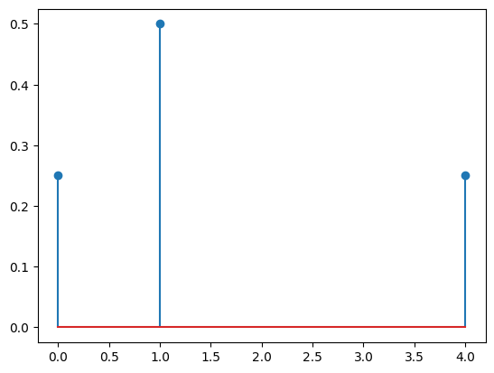
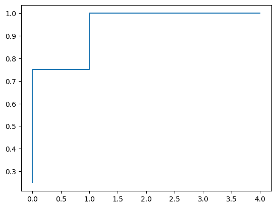

Cumulative Distribution Function
Contents
Cumulative Distribution Function#
Definition#
Definition 11 (Cumulative Distribution Function)
Let \(X\) be a discrete random variable with \(\S = \lset \xi_1, \xi_2, \dots, \xi_n \rset\).
Then the cumulative distribution function \(\cdf\) is defined as
(3)#\[
\cdf(\xi_k) \overset{\text{def}}{=} \P \lsq X \leq \xi_k \rsq = \sum_{\ell=1}^k \P \lsq X = \xi_{\ell} \rsq = \sum_{\ell=1}^k \pmf(\xi_{\ell})
\]
Since \(\P \lsq X = \xi_{\ell} \rsq\) is the probability mass function, we can also replace the symbol with the \(\pmf\) symbol.
If \(\S = \lset \ldots, -1, 0, 1, 2, \ldots \rset\), then we can write the CDF as
\[
\cdf(k) \overset{\text{def}}{=} \P \lsq X \leq k \rsq = \sum_{\ell=-\infty}^k \P \lsq X = \ell \rsq = \sum_{\ell=-\infty}^k \pmf(\ell)
\]
Example 4 (CDF)
Consider a random variable \(X\) with the following probability mass function:
\[\begin{split}
\pmf(x) = \begin{cases}
\frac{1}{4} & \text{if } x = 0 \\
\frac{1}{2} & \text{if } x = 1 \\
\frac{1}{4} & \text{if } x = 4 \\
\end{cases}
\end{split}\]
Then by definition Definition 11, we have the CDF of \(X\) to be computed as:
\[\begin{split}
\begin{align}
\cdf(0) &= \P \lsq X \leq 0 \rsq = \P \lsq X = 0 \rsq = \frac{1}{4} \\
\cdf(1) &= \P \lsq X \leq 1 \rsq = \P \lsq X = 0 \rsq + \P \lsq X = 1 \rsq = \frac{1}{4} + \frac{1}{2} = \frac{3}{4} \\
\cdf(4) &= \P \lsq X \leq 4 \rsq = \P \lsq X = 0 \rsq + \P \lsq X = 1 \rsq + \P \lsq X = 4 \rsq = \frac{1}{4} + \frac{1}{2} + \frac{1}{4} = 1
\end{align}
\end{split}\]
import warnings
warnings.filterwarnings('ignore')
import numpy as np
import matplotlib.pyplot as plt
p = np.array([0.25, 0.5, 0.25])
x = np.array([0, 1, 4])
F = np.cumsum(p)
plt.stem(x,p,use_line_collection=True); plt.show()
plt.step(x,F); plt.show();

